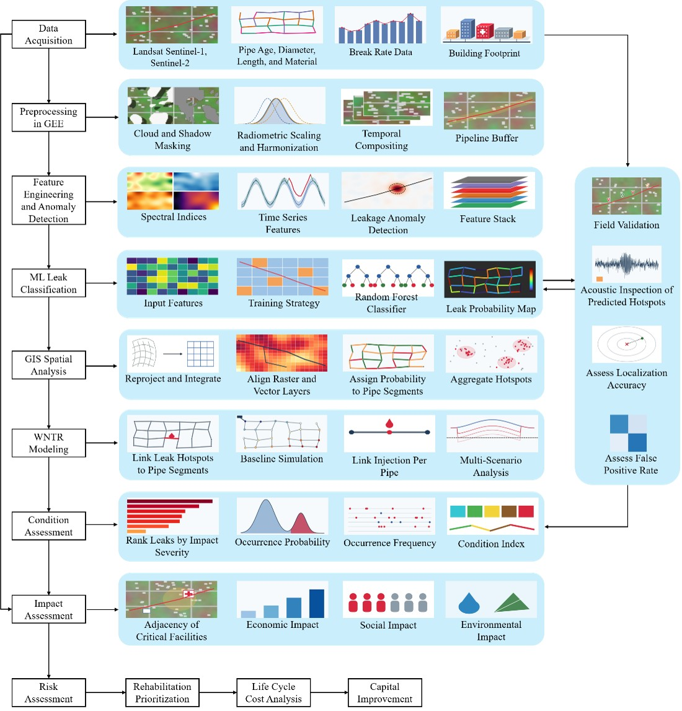

Hi! I'm Julker Nayen Rafi,
a Graduate Researcher in Civil Engineering
at Georgia Southern University.
Focused on infrastructure risk assessment, asset management,
and life cycle cost analysis of water distribution systems.
Research
My research centers on risk assessment and asset management of water distribution systems (WDS). I develop probabilistic frameworks using Markov chain models, GIS-based spatial analysis, and life cycle cost analysis to support data-driven rehabilitation planning for aging water infrastructure.

Markov Chain-Based Pipeline Deterioration Modeling

Santa Monica WDS — Seismic & Aging Risk Analysis

Cybersecurity Risk Assessment for Water Utilities

Professional Experience
Before pursuing graduate studies, I accumulated 4.5 years of professional experience in structural engineering. My work included designing new reinforced concrete and steel buildings, conducting detailed engineering assessments (DEA) of existing structures, and performing over 80 structural safety inspections of garment factories in Bangladesh at the RMG Sustainability Council (RSC, formerly ACCORD).
About Me
I am a Master's student in Civil Engineering with a major in Structural Engineering at Georgia Southern University. My research interests span infrastructure risk assessment, asset management, and vulnerability analysis under natural hazards. I am passionate about applying data science, machine learning, and probabilistic modeling to solve real-world infrastructure challenges. I am currently seeking PhD opportunities to deepen my work in infrastructure resilience and risk-informed decision-making.
Contact
I am always open to discussing research collaborations, PhD opportunities, or topics related to infrastructure asset management and risk assessment. Feel free to reach out!